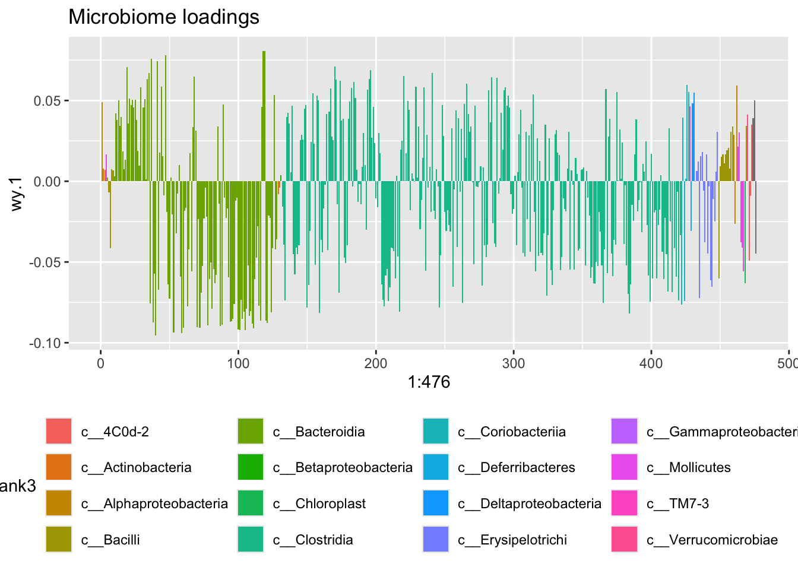

Canonical Correlation Analysis
In order to answer biological questions, often a combination of high-throughput data is generated. Especially in combination with microbiome types of data, the associated metabolome is naturally of interest, as these two sources together reflects who are there and what do they do.
In the analysis of such data a natural starting point is to look for common structure. That is; which types of bacteria are correlated to a certain type of metabolites.
Canonical Correlation Analysis
Canonical correlation analysis is a rather old statistical technique for finding common components between two sets of correlated variables such as microbiome and metabolomics data.
For an introduction and some getting started code check out the mixOmics package webpage.
Indeed the vanilla CCA is limited due to dimentionallity issues from way to many variables compared to number of samples. Therefore several attemps has been made to circumvent this. Here we will exchange correlation by covariance to add a simple fix.
Below is a 2 component canonical covariance model.
But first you need to install a package.
library(devtools)
install_github('mortenarendt/StructuralKnowledgeModl')library(structMultMdl)
library(phyloseq)
library(tidyverse)
load('./data/Rats_inulin.RData')
phyXpp <- subset_samples(phyX, !is.na(Acetate))
phyXpp <- filter_taxa(phyXpp, function(x) sum(x>0)>0, TRUE)
phyXpp <- transform_sample_counts(phyXpp, function(x) x/sum(x))
OTUtb <- data.frame(t(otu_table(phyXpp)))
Mtb <- sample_data(phyXpp)[,c("Acetate","Butyrate","Fructose","Glucose","Lactate","Propionate","Xylose")]
# preprocess the Mtb data
Mtb$Xylose <- Mtb$Xylose + 0.141/2 # there is zeros for this one - so to fix log we need to add a bit.
Mtb <- log(Mtb)
# scale the variables
GM <- as.matrix(scale(OTUtb, center = T))
mtb <- as.matrix(scale(Mtb, center = T))
results <- pCCA(mtb,GM,ncomp = 2, na = 0,nperm = 3)
print(results$res_df)## A p_corr_cmp1 p_corr_cmp2 p_var_cmp1 p_var_cmp2
## 1 0 0 0 0 0Now, lets try to extract the model parameters and plot them
# dig out scores and loadings and plotit.
scores <- data.frame(tx = results$a_results[[1]]$model$tx,
ty = results$a_results[[1]]$model$ty)
loadsY <- data.frame(wy = results$a_results[[1]]$model$Wy)
loadsY <- cbind(loadsY, tax_table(phyXpp), by = 'row.names')
loadsX <- data.frame(wx = results$a_results[[1]]$model$Wx)
loadsX$name <- rownames(loadsX)
ggplot(data = scores, aes(tx.1,ty.1)) +
geom_point() +
xlab('Metabolomics Score') + ylab('Microbiome Score') +
stat_smooth(method = lm, se= F)
ggplot(data = loadsY[order(loadsY$Rank4),],aes(x = 1:476,wy.1,fill = Rank3)) +
geom_bar(stat = 'identity') +
ggtitle('Microbiome loadings') +
theme(legend.position = 'bottom')
ggplot(data = loadsX,aes(wx.1,wx.2,label = name)) +
geom_point() + geom_label() +
ggtitle('Metabolomics loadings') +
geom_hline(yintercept = 0) + geom_vline(xintercept = 0)This is a nice correlation, and this model is probably a good model, slightly overfitted though, but the main concern here is that it is hard to interpret, as ALL the OTUs are active and further, tends to be pointing in different direction eventhough they are rather similar wrt taxonomy.
Penalized Canonical Correlation Analysis
In order to circumvent this, a penalized model is produced. Two types of penalties are incorporated;
- Sparsity - to set a fair part of the not so informative loadings to zero.
- Loading similarity for phylogentic similarity.
The heuristics behind a phylogentic penalty is to make OTUs which are phylogentically close also to have similar model parameters. Here, a the phylogenetic tree is represented as a similarity matrix, which can be extracted by the cophenetic.phylo() function from the library ape, and translated from distance to similarity by either cor() or exp(-distance).
The sumabs argument is controling the level of sparsity for each loading vector on the input matrices respectively, such that a low value gives a more sparse model. the na argument imposes a grid from 0 (no phylogentic penalty) to 1 (alot of phylogentic penalty), resulting in just as many models.
fixKernelMatrix <- function(P, thr = 1e-5,niter = 1000){
conv <- 1
n <- dim(P)[1]
cc <- 0
PP <- P
while (conv>thr & cc<niter){
cc <- cc+1
for (i in 1:n){
PP[i,] <- P[i,] / sum(P[i,])
PP[,i] <- P[,i] / sum(P[,i])
}
conv <- norm(P - PP,'F')
P <- PP
}
print(paste('Kernel Smoother updated in',cc, 'iterations at thr =',thr))
return(PP)
}
D <- ape::cophenetic.phylo(phy_tree(phyXpp))
#R <- cor(D)
R <- fixKernelMatrix(exp(-D))## [1] "Kernel Smoother updated in 220 iterations at thr = 1e-05"res_pen <- pCCA(mtb,GM,R,ncomp = 2,sumabs = c(10,6), na = 10,nperm = 30)
print(res_pen$res_df)## A p_corr_cmp1 p_corr_cmp2 p_var_cmp1 p_var_cmp2
## 1 0.0000000 0 0.0000000 0 0.00000000
## 2 0.1111111 0 0.0000000 0 0.00000000
## 3 0.2222222 0 0.0000000 0 0.00000000
## 4 0.3333333 0 0.0000000 0 0.00000000
## 5 0.4444444 0 0.0000000 0 0.00000000
## 6 0.5555556 0 0.0000000 0 0.00000000
## 7 0.6666667 0 0.0000000 0 0.00000000
## 8 0.7777778 0 0.0000000 0 0.03333333
## 9 0.8888889 0 0.0000000 0 0.03333333
## 10 1.0000000 0 0.2666667 0 0.33333333Now we take a descision on which model to use and extract it in a similar fashion as above. Resulting in the microbiome loadingplot below.
1 Exercises
1.1 Vanilla CCA
Perform the uncontrained CCA as above and reconstruct the plots
1.2 Penalized CCA
Try build a penalized version with two components, no sparsity for the metabolites but some sparsity for the microbiome. Screen a grid of phylo-penalities and decide which model to use, extract and plot it.